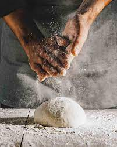
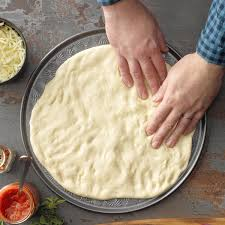
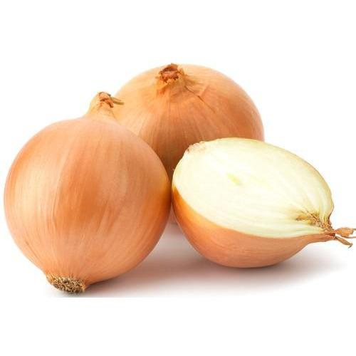
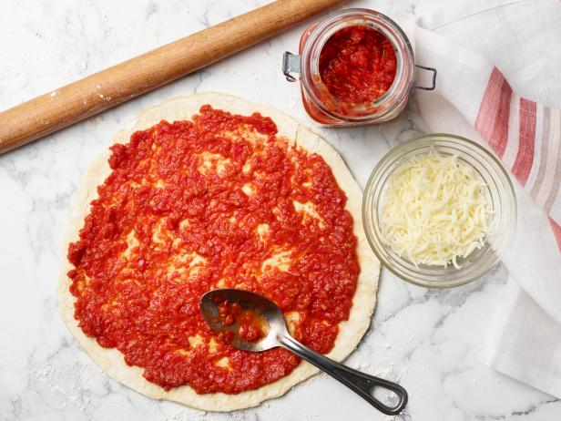
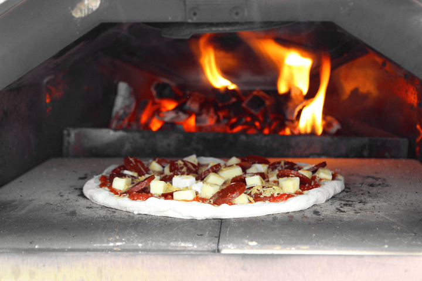

Pizza

- Ingredients of Pizza(2 serving):
- 2 cup all purpose flour
- 100 ml tomato ketchup
- 1 tomato
- 2 onion
- 1 teaspoon chilli flakes
- 1 teaspoon baking powder
- 1 teaspoon sugar
- 100 gm processed cheese
- 4 mushroom
- 1/2 capsicum (green pepper)
- 1 teaspoon oregano
- 1/2 cup mozzarella
- 1 tablespoon dry yeast
- water as required
- How To Make Pizza
- Step 1 Prepare the pizza dough
Take a dough kneading plate and add all-purpose flour to it. Next, add salt and baking powder in it and sieve the flour once. Then, make a well in the centre and add 1 teaspoon of oil to it. On the other hand, take a little warm water and mix the yeast in it along with 1 teaspoon of sugar. Mix well and keep aside for 10-15 minutes. The yeast will rise in the meantime. Once the yeast has risen, add it to the flour knead the dough nicely using some water. Keep this dough aside for 4-6 hours. Then knead the dough once again. Now, the pizza dough is ready.

- Step 2 Prepare the pizza base
Preheat the oven at 180 degree Celsius. Now, is the time to make the pizza base when the dough is ready. Dust the space a little using dry flour and take a large amount of the pizza dough. Using a rolling pin, roll this dough into a nice circular base. (Note: Make sure that the circular base is even at all ends.) Once you have made the base, use a fork and prick the base with it so that the base doesn't rise and gets baked nicely. Put it into the preheated oven and bake it 10 minutes. Now, your pizza base is ready.

- Step 3 Chop all the vegetables for the pizza
Now, wash the capsicum and slice it thinly in a bowl. Then, peel the onions and cut thin slices of it as well in another bowl. And finally, cut tomatoes and mushrooms in the same manner. However, make sure that those tomatoes have less juice in them. Once all the veggies are done, Now, grate the processed and mozzarella cheese in separate bowls.

- Step 4 Spread the sauce and veggies on the base
Then, take the fresh pizza base and apply tomato ketchup all over. Spread half the processed cheese all over the base and evenly put the veggies all across the base. Once you have put all the veggies, put a thick layer of mozzarella cheese.

- Step 5 Bake the pizza at 250 degree Celsius for 10 minutes
Put this pizza base in a baking tray and place it inside the oven. Let the pizza bake 10 minutes at 250 degree Celsius. Once done, take out the baking tray and slice the pizza. Sprinkle oregano and chilli flakes as per your taste and serve hot. (Note: Make sure that the oven is preheated at 250 degree Celsius for 5 minutes at least.)

- Tips
- One of the basic tips is to make sure that you have preheated the oven. In case you are using a standard oven then make sure it’s preheated at 280 degree Celsius
- In case you are using a readymade base, make sure it’s not cold. Make sure that you take it out half an hour before you start making the pizza.
- Don’t roll the dough, stretch it to make the base. This means if you are making the fresh pizza base, the dough will be at room temperature and it would be easy to stretch it.
- The best way to make restaurant-style pizza is to use a pizza stone, as it helps the dough in rising and makes it crisp as well. Go for it.
- If you want to use an organic approach in your pizza, then you can use the fresh tomato puree or paste. This will make your pizza more delicious.